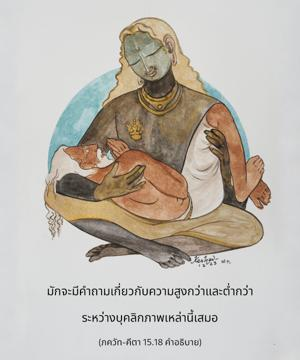

เพราะว่าข้าเป็นทิพย์อยู่เหนือทั้งผู้ผิดพลาดและผู้ไม่ผิดพลาด และเนื่องจากข้ายิ่งใหญ่ที่สุด ข้าจึงมีชื่อเสียงทั้งในโลกและในคัมภีร์พระเวทในฐานะที่เป็นองค์ภควาน

ไม่มีผู้ใดมีความสามารถเกินไปกว่าองค์กฺฤษฺณบุคลิกภาพสูงสุดแห่งพระเจ้าไม่ว่าจะเป็นพันธวิญญาณ หรืออิสรวิญญาณ ดังนั้น พระองค์ทรงเป็นบุคลิกภาพผู้ยิ่งใหญ่ที่สุด ตรงนี้ได้กล่าวไว้อย่างชัดเจนว่า ทั้งสิ่งมีชีวิตและองค์ภควานฺเป็นปัจเจกบุคคล ข้อแตกต่างคือ สิ่งมีชีวิตไม่ว่าอยู่ในระดับที่ถูกพันธนาการ หรือในระดับที่มีอิสรภาพก็ไม่สามารถมีปริมาณเหนือกว่าพลังอำนาจที่ไม่สามารถมองเห็นได้ของบุคลิกภาพสูงสุดแห่งพระเจ้า จึงเป็นการไม่ถูกต้องที่คิดว่าองค์ภควานฺ และสิ่งมีชีวิตอยู่ในระดับเดียวกัน หรือเท่าเทียมกันในทุกๆ ด้าน มักจะมีคำถามเกี่ยวกับความสูงกว่า และต่ำกว่าระหว่างบุคลิกภาพเหล่านี้เสมอ คำว่า อุตฺตม มีความสำคัญมาก ไม่มีผู้ใดสามารถอยู่เหนือองค์ภควานฺ
คำว่า โลเก แสดงถึง “ใน เปารุษ อาคม (พระคัมภีร์ สฺมฺฤติ)” ดังที่ยืนยันไว้ในพจนานุกรม นิรุกฺติ ว่า โลกฺยเต เวทารฺโถ ’เนน “จุดมุ่งหมายของคัมภีร์พระเวท พระคัมภีร์ สฺมฺฤติ ได้อธิบายไว้”
องค์ภควานฺในรูปลักษณ์ปรมาตฺมา ภายในหัวใจทุกคนได้มีการอธิบายไว้ในคัมภีร์พระเวทเช่นกัน โศลกเหล่านี้ปรากฏในคัมภีร์พระเวท (ฉานฺโทคฺย อุปนิษทฺ 8.12.3) ตาวทฺ เอษ สมฺปฺรสาโท ’สฺมาจฺ ฉรีราตฺ สมุตฺถาย ปรํ โชฺยติ-รูปํ สมฺปทฺย เสฺวน รูเปณาภินิษฺปทฺยเต ส อุตฺตมห์ ปุรุษห์ “องค์อภิวิญญาณที่ทรงออกมาจากร่างกายแล้วจึงเสด็จเข้าไปใน พฺรหฺม-โชฺยติรฺ ที่ไร้รูปลักษณ์ จากนั้นด้วยรูปลักษณ์ของพระองค์ พระองค์ทรงไว้ซึ่งบุคลิกลักษณะทิพย์ ผู้ที่สูงสุดองค์นั้นเรียกว่า บุคลิกภาพสูงสุด” เช่นนี้หมายความว่าบุคลิกภาพสูงสุดทรงแสดงและทรงแพร่กระจายรัศมีทิพย์ของพระองค์ซึ่งเป็นแสงอันเจิดจรัสสูงสุด บุคลิกภาพสูงสุดพระองค์นั้นทรงมีรูปลักษณ์อยู่ภายในหัวใจของทุกๆ คนด้วยเช่นกันในรูปของ ปรมาตฺมา จากการอวตารมาเป็นบุตรของ สตฺยวตี และ ปราศร องค์วฺยาสเทว ทรงอธิบายความรู้พระเวท